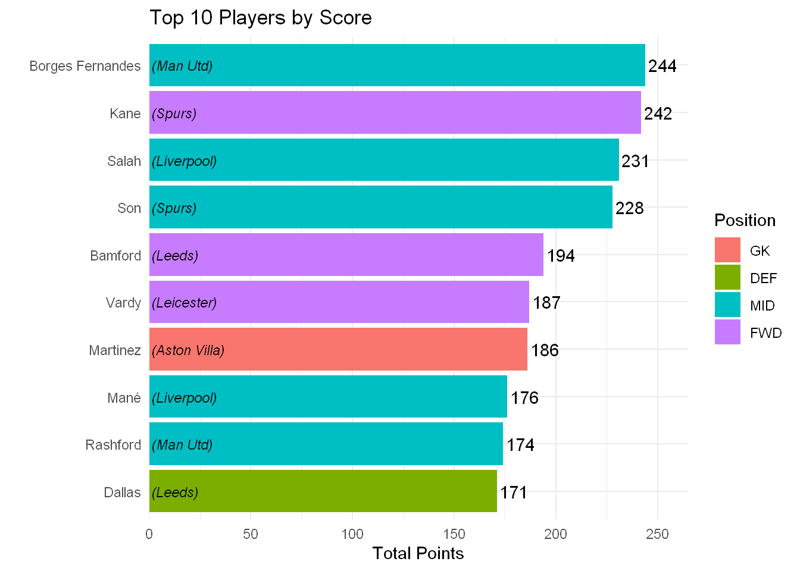

Season Look
First let’s look at the total points distribution for each other. We notice that for all players, the median total point score is 28 points. But we should not that the data includes players who did not even play more 1 minute. So by filtering for increasing play time, we see that the median points score also increases.
Let’s view the 10 highest point scorers.

We see that Bruno Fernades scored the most amount of points with 244, this is followed by Kane (242) and Salah (231). There are 5 midfielders, 3 forwards, 1 defender and 1 goalkeeper in the top 10. This suggests that attacking players are more likely to get more points than players in defensive positions.
Let’s now look to see how the points distribution differed by player position
It seems like midfielders and forwards score more points than defenders or goalkeepers. Let’s visualise this.
From the graph is appears that for all players, goalkeepers have the lowest median total points score, while defenders, midfielders and forwards are about on the same level. But as we increase our threshold for the number of players, forwards ending up having the highest average points, which is followed by goalkeepers.
Let’s view the median results
| Position | 0 mins | 1 min | 500 mins | 1,000 mins | 2,000 mins | 3,000 mins |
|---|---|---|---|---|---|---|
| GK | 1 | 48 | 124 | 128.0 | 131.5 | 132.5 |
| DEF | 29 | 50 | 63 | 79.5 | 100.0 | 126.0 |
| MID | 33 | 54 | 70 | 76.0 | 105.5 | 123.5 |
| FWD | 35 | 42 | 77 | 99.5 | 134.0 | 194.0 |
The above table tells us the median points scored by position and minutes played. For example, the median for total points scored by forwards who played at least 2,000 minutes was 134 points. The case for when the minimum number of minutes played is zero corresponds to all players in the data set.
What we see is that goalkeepers and forwards have a high median for total points, followed by midfielders and defenders. What is interesting is that there isn’t much difference in the median when comparing goalkeepers who played at least 2,000 minutes and those who scored 3,000 minutes.
(If you are curious, the maximum number of minutes a player can play is 90 mins for 38 games, thus the maximum is 90*38 = 3,420 minutes )
We see that there is a massive jump for forwards when the minimum minutes threshold is increased, this be due to the fact that forwards who play more have more chances at goal, and thus leading to more goals being scored?
What we notice from the above graph is that some teams performed better than others. For example across all players, Manchester United are the 4th worse team in terms of points scored by player on average, but as we increase the threshold for the minutes a player has played, the team jumps to the 5th best.
While minutes played is indeed highly correlated with total point scored, there’s no way of guaranteeing which players will end up playing for many minutes - there may be unexpected events like injuries that can occur which causes the minutes played to be cut short. A general rule of thumb would be to generally choose players who are in the starting 11 for a squad.
Do minutes vary by posistion and budget?
We will bucket players into various categories according to their position and price range
The players bucketed as follows
| Position | Budget | Low-Mid | High-Mid | Premium |
|---|---|---|---|---|
| GK | <£4.5m | £4.5m-£5m | £5m-£5.5m | >£5.5m |
| DEF | <£5m | £4.5m-£5m | £5m-£6m | >£6m |
| MID | <£5m | £5m-£7.5m | £7.5m-£9.5m | >£9.5m |
| FWD | <£6m | £6m-£7.5m | £7.5m-£9.5m | >£9.5m |
The prices were made completely arbitrarily but are general enough to represent the price bracket a player is in.
The above graph tell us that on average, more expensive players score more points. But given the budget restrictions, we can’t simply pick a team full of expensive players as we wouldn’t be able to afford them, so another metric to look at is how efficient a player is at scoring points relative to their price.
The graph also shows that premium midfielders had the highest median score. This should be clear as these players get an extra point for scoring goals than goals, and also get a point for any clean sheets.
We introduce the metric of points efficiency of player which is simply \(\frac{\text{Total Points}}{\text{Cost}}\).(Note here we use a player’s initial cost)
By looking at the ratio of points to cost, we see that again, generally speaking, more expensive players had a better efficiency score, but there were many players in the Low-Mid category that had great value.
Above we see that as the price range of a player increases, so does the price efficiency. However, we note that goalkeepers who were the in category of high-mid or premium had about an equal median value for price efficiency. There were many goalkeepers in the low-mid category who had a high.
For defenders we see that mid-high defenders had a better price efficiency than premium defenders, but there were many low-mid defenders who a high price efficiency for their position.
For midfielders and forwards, players in high price categories tended to yield a high price efficiency, but there were many players that gave a high price efficiency.
For all positions, it appears that players in the budget category had a poor points efficiency.
Home or Away?
Next we look at the impact of whether the location of the game had an impact in the number of points scored. Given that most of the games were played in empty stadiums it would suggest that there shouldn’t be too big of a difference in the total points by locations.

We see that there is an ever slightly small advanrage at playing home, as the median is slightly higher for home games than away games.
Let’s see if there are any differences by position
We oddly see that Goalkeepers tend to return more points away from home, whereas the opposite is true for the other positions. Could this be because away from home, goalkeepers face a lot of shots and so goalkeepers away from home accumulate more points from shots?
Here we see that some teams perform better at home rather than away.